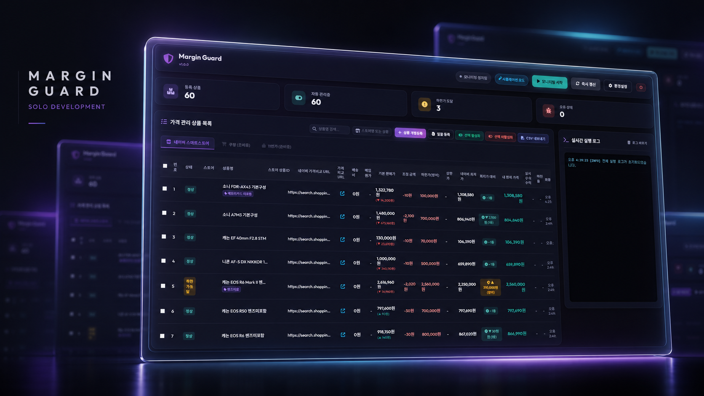
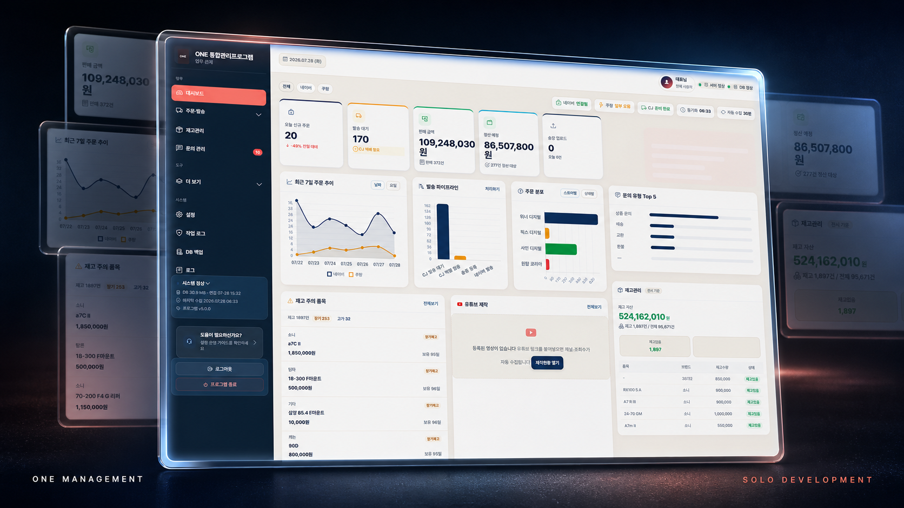
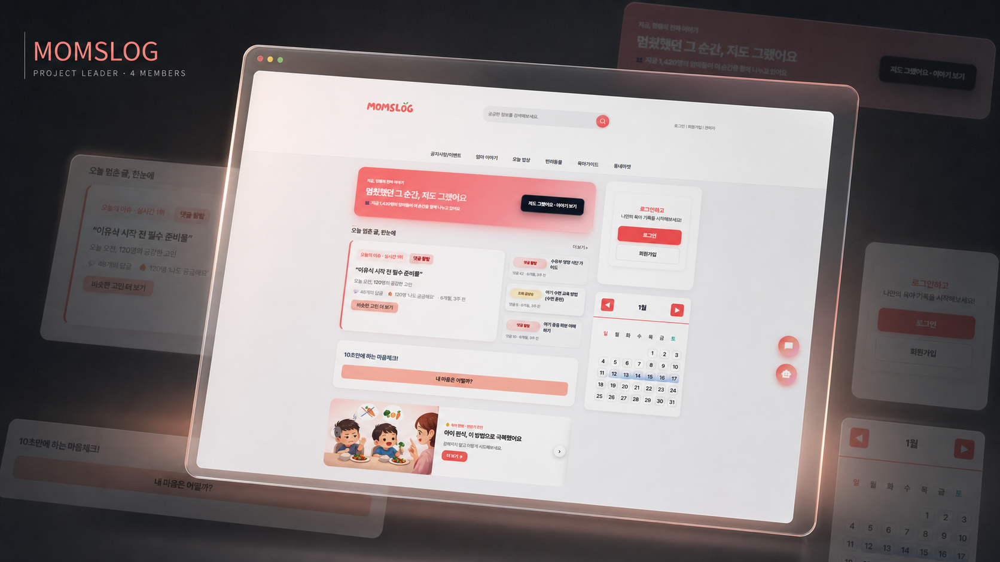
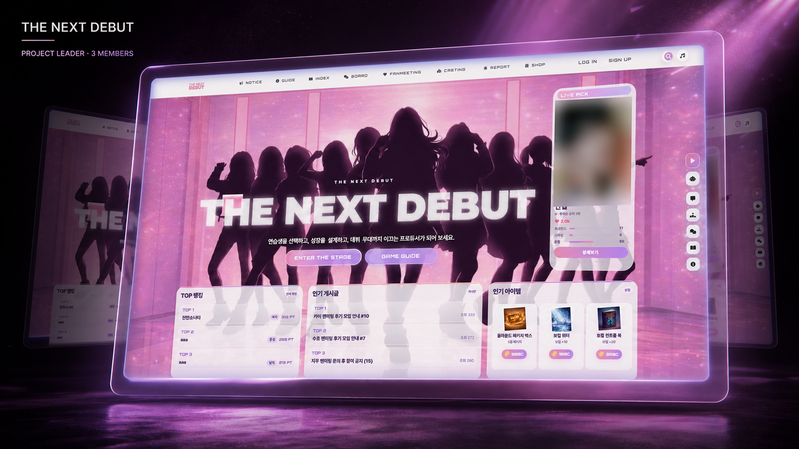

문제를 발견합니다
현업의 반복과 사용자의 불편을 관찰해 해결할 문제를 정확히 정의합니다.
사내 프로그램 2건을 단독 개발하고, 두 번의 팀 프로젝트를 팀장으로 완성했습니다. 사용자 화면부터 서버·데이터베이스·외부 API·자동화까지 서비스 전체 흐름을 구현합니다.
프로젝트와 근거 보기 ↘프론트엔드와 백엔드를 연결해,
아이디어를 실제 서비스로 완성합니다.
현업의 반복과 사용자의 불편을 관찰해 해결할 문제를 정확히 정의합니다.
사용자 화면, 서버, 데이터베이스와 외부 API를 하나의 서비스로 연결합니다.
두 번의 팀장 경험으로 역할과 우선순위를 정리하고 결과물을 통합했습니다.
IN-HOUSE 02 / TEAM PROJECT 02 / 2026

6개 스토어의 411개 상품을 등록하면 경쟁 가격 추적과 하한가 보호를 자동으로 수행합니다. 기획부터 가격 엔진까지 혼자 구현해 사내 4명이 사용하고 있습니다.

네이버 스마트스토어 4개와 쿠팡 2개의 주문·발송·재고·문의 데이터를 한 화면으로 연결했습니다. 사내 4명이 실제 업무에 사용하는 통합 관리 프로그램입니다.

4인 팀의 팀장으로 기획·역할 분배·Django 구조 설계·핵심 백엔드와 기능 통합을 이끈 육아 커뮤니티입니다.

3인 팀의 팀장으로 서비스 방향, 일정과 기능 통합을 관리하고 Spring Boot와 Python ML을 연결한 아이돌 육성 플랫폼입니다.
반복 확인에서 자동 처리로. 상품을 등록하면 가격 추적과 보호 정책이 자동으로 실행되어 수작업을 크게 줄였습니다.
경쟁사 가격을 사람이 반복 확인하고 직접 수정해야 했습니다. 최저가만 따라가면 원가 이하로 판매될 수 있어 자동화와 마진 보호가 동시에 필요했습니다.
기획, UI, FastAPI, SQLAlchemy 모델, 네이버 API, 가격 계산 엔진, 스케줄러와 텔레그램 알림까지 전체를 단독 개발했습니다.
main.py API 엔드포인트 models.py Store·Product·Log naver_api.py 쇼핑·커머스 API scheduler.py 자동 모니터링 price_policy.py 하한가·가격 정책 static/ 관리자 대시보드
target = lowest - price_diff
if target < min_price:
final = min_price
elif competitor_not_found:
final = base_price
else:
final = targetTROUBLESHOOTING · 검색 최저가와 실제 카탈로그 가격 차이를 해결하기 위해 상품 식별 → 카탈로그 확인 → 가격 검증을 분리했습니다. 정상 가격을 확인하지 못하면 기존 판매가를 유지합니다.
여러 판매 채널의 주문·발송·재고·문의 데이터를 각각 확인해야 했습니다. 전체 운영 상태를 한 화면에서 판단할 도구가 필요했습니다.
현업 분석, 대시보드, 채널 데이터 수집과 변환, 재고 위험 감지, 운영 로그와 백업 구조를 단독 구현했습니다.
collectors/ 채널별 수집 normalizers/ 공통 형식 변환 services/ 주문·재고·문의 database/ 통합 저장·백업 scheduler/ 30분 자동 수집 dashboard/ 운영 현황 UI
raw = channel.fetch()
data = adapter.convert(raw)
database.upsert(data)
if failed:
keep_previous_data()TROUBLESHOOTING · 채널마다 다른 상태 값을 공통 기준으로 정규화했습니다. 일부 채널 수집 실패 시 이전 정상 데이터를 유지하고 실패 채널만 표시합니다.
육아 정보, 지역 게시글, 레시피와 부모 간 채팅을 한곳에서 이용하는 커뮤니티를 개발했습니다.
팀장으로 역할과 일정을 관리하고, 기능을 책임별 Django 앱으로 분리했습니다. 인증·게시판·채팅과 최종 통합을 담당했습니다.
accounts/ 회원·등급·인증 board/ 게시글·댓글·지역 chat/ 채팅·WebSocket chatbot/ AI 상담 map/ 육아 시설 지도 recipes/ 레시피·이미지 quests/ 일일 퀘스트
User 1 ─ N FreePost Post 1 ─ N Comment User N ─ M ChatRoom Room 1 ─ N Message Recipe 1 ─ N Image
TROUBLESHOOTING · 한곳에 모여 있던 로직을 기능별 Django 앱과 URL include 구조로 분리해 팀원이 독립적으로 작업하도록 개선했습니다.
연습생 육성, 게임, 재화, 상점, 커뮤니티와 팬미팅이 연결되는 아이돌 육성 플랫폼을 개발했습니다.
팀장으로 서비스 흐름과 일정을 관리하고 Spring Boot의 인증·게임·커뮤니티와 Python ML 서버를 통합했습니다.
controller/ 요청·화면 service/ 성장·게임·결제 repository/ JPA 데이터 접근 entity/ 핵심 데이터 모델 security/ 일반·소셜 로그인 websocket/ 실시간 채팅 python-ml/ ML 보조 서버
Member 1 ─ N MyTrainee Member 1 ─ N GachaLog Member 1 ─ N MarketTxn Board 1 ─ N Comment ChatRoom 1 ─ N Line
TROUBLESHOOTING · 인증·게임·결제·성장 데이터의 충돌을 줄이기 위해 사용자 중심 데이터 흐름과 계층별 책임을 정리하고 ML 연동 지점을 분리했습니다.
역할을 크게 쓰는 대신, 프로젝트마다 직접 책임진 범위를 구분했습니다. 사내 프로젝트는 단독 개발, 팀 프로젝트는 팀장으로 구조와 핵심 기능 및 최종 통합을 담당했습니다.
if target_price < min_price:
target_price = min_price
status = "하한가 도달"
elif max_price > 0 and target_price > max_price:
target_price = max_price
status = "상한가 도달"
if current_price > 0 and target_price > current_price:
target_price = current_price경쟁 가격을 추적하되 설정한 상·하한선을 벗어나지 않고, 경쟁사가 가격을 올려도 판매가를 자동 인상하지 않도록 설계한 순수 가격 정책 로직입니다.
등록 상품을 대상으로 가격 정책과 모니터링 흐름 구현
ONE 대시보드에서 확인 가능한 통합 재고 항목
기획부터 UI·서버·DB까지 단독 완성한 사내 프로그램
팀장으로 설계와 핵심 개발 및 최종 통합을 이끈 프로젝트
CODE DISCLOSURE 사내 프로젝트의 전체 저장소는 공개하지 않으며, 포트폴리오에는 공개 가능한 구조와 핵심 로직만 제시합니다.
PUBLIC GITHUB ↗
마진가드 가격 엔진과 ONE 통합관리 자동화 프로그램 단독 개발
실무 2건

실무 REST API 서버 구축 · Django 커뮤니티 구조 설계와 통합
독립 구현

소셜 로그인 · 결제 · JPA · WebSocket 서비스 통합
팀장 개발

반응형 관리자 대시보드 · API 데이터 바인딩과 사용자 인터랙션
4개 프로젝트

SQLite · H2 · SQLAlchemy · JPA · Naver · OAuth · KakaoPay
다수 연동4인 팀의 팀장으로 역할 분배와 일정 관리, Django 앱 구조 정리, 핵심 백엔드와 최종 기능 통합을 담당했습니다.
3인 팀의 팀장으로 서비스 방향과 일정을 관리하고 Spring Boot 서비스와 Python ML 서버를 통합했습니다.
AI에게 코드를 맡기는 사람이 아니라, AI와 함께 더 빠르게 완성하는 개발자입니다. 요구사항을 구조화하고, 생성된 코드를 이해하며, 오류를 추적하고, 실제 서비스 수준까지 직접 검증합니다.
코드베이스 분석부터 기능 구현, 수정과 검증까지 작업 단위로 지시하고 결과를 통제합니다.
프로젝트 문맥을 기반으로 빠르게 탐색하고 반복 구현하며 기존 코드와 자연스럽게 연결합니다.
아이디어와 요구사항을 실제 화면과 기능으로 전환하는 AI 중심 개발 흐름을 활용합니다.
터미널 환경에서 구조 분석, 리팩터링, 디버깅과 반복 작업을 효율적으로 수행합니다.
한국소프트웨어인재개발원에서 웹 풀스택, 백엔드, 데이터베이스와 프로젝트 중심 개발 과정을 학습했습니다.
Django 기반 육아 커뮤니티를 개발하며 역할 분배, 앱 구조와 기능 통합을 이끌었습니다.
Spring Boot 기반 아이돌 육성 플랫폼의 방향과 일정, 기능 통합을 담당했습니다.
여러 판매 채널의 주문·재고·문의 흐름을 통합하는 사내 운영 프로그램을 완성했습니다.
경쟁 가격을 자동 추적하고 하한가를 보호하는 실무 가격 관리 시스템을 기획부터 구현했습니다.
문제를 발견하고, 구조를 설계하고, 작동하는 서비스로 완성합니다.
다음 프로젝트의 시작을 함께 만들겠습니다.